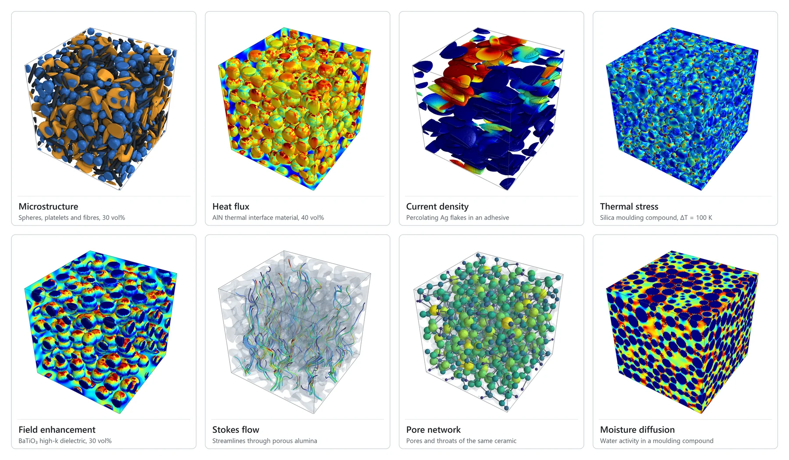
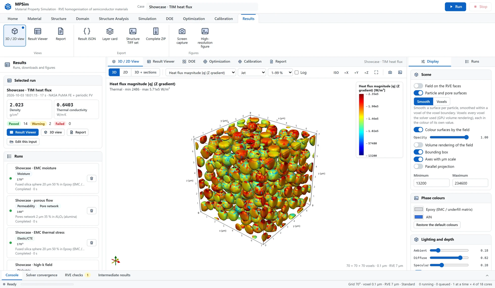

MPSim · Material Property Simulation
Effective properties of semiconductor materials computed from their microstructure — the 3D structure is generated, the physics is solved inside it, and you see where heat, current, stress and resin flow actually go.

How it works
MPSim puts the whole workflow of a digital-material study in one browser workspace. It runs on one PC, or on a server that the rest of the network opens in a browser; no data leaves the machine.
Build the microstructure
Fillers of any shape, size distribution and orientation, pores, coatings, hollow particles, multi-filler blends and thin films, on a voxel representative volume element (RVE) whose size is checked against measured criteria.
Solve the physics
Validated open-source solvers — periodic finite volume, FFT-accelerated voxel finite elements, NASA PuMA, PoreSpy and openEMS — compute the effective tensors, with rigorous bounds alongside.
See inside
Interactive 3D and 2D views of every field, animated field lines, publication figures, a single-file HTML report and every number traceable to the method that produced it.
Analyses
Written for the materials of semiconductor packaging, devices and process equipment — moulding compounds, underfills, thermal interface materials, conductive adhesives, dielectrics, EMI absorbers, porous ceramics and filters.
Thermal and electrical
- Conductivity tensors, interfacial and contact resistance
- Percolation of conductive fillers
Dielectric, magnetic, EMI
- Dk, Df, field enhancement, permeability
- Shielding effectiveness with a full-wave check
Elasticity and CTE
- Stiffness, engineering constants, CTE tensor
- Thermal stress; α1 / α2 above Tg
Viscosity and flowability
- Viscosity of uncured compounds, flow curves
- Particle dynamics of the fillers: the particle-size effect and shear thinning, on CPU or GPU
- Maximum packing, underfill filling time, settling
Moisture
- Moisture diffusivity and saturated uptake
- Uptake curve of a part, hygroscopic swelling (CME)
Flow, filtration, acoustics
- Permeability, filtration efficiency, tortuosity
- Acoustic absorption, radiative extinction
Morphology
- Porosity, size distributions, porosimetry
- Pore networks, grain statistics, percolation paths
Calibration
- Unknown material values from measurements, a filler's surface from a measured viscosity
- Credible intervals, identifiability, next measurement
DOE and optimisation
- Factorial and Latin-hypercube studies
- Gaussian-process surrogates, Sobol indices, NSGA-II
The workspace
A ribbon that follows the order of a study, the inputs on the left, the 3D view, Result Viewer or report in the centre, and what is drawn on the right.

Verification
The engine is checked against problems whose answers are known, and every run reports its own checks — RVE size, resolution, particle count, convergence and rigorous bounds — as passed, warning or failed, with the reason.
Presets
- EMC · epoxy + fused silica
- Underfill · epoxy + silica
- MUF flowability · bimodal silica
- EMC reliability · moisture, swelling, above Tg
- TIM · silicone + Al₂O₃ with interfacial resistance
- TIM · epoxy + AlN
- Hybrid TIM · Al₂O₃ + AlN blend with contact resistance
- Thermal sheet · h-BN platelets
- Thin film · polyimide + h-BN
- Conductive adhesive · Ag flakes
- Sintered silver die attach
- EMI shielding · Ni rods
- Noise-suppression sheet · Sendust flakes
- Low-Dk · hollow silica
- High-k · BaTiO₃
- Low CTE · ZrW₂O₈
- Porous low-k film
- Porous ceramic · Al₂O₃
- UPW membrane · PTFE
- Sintered gas filter · SUS316L
- Fibrous insulation · E-glass
Download and install
PC without internet
Download MPSim-…-offline-win64.zip from the
latest release. It carries the official Python
runtime, every wheel including NASA PuMA, and openEMS. Unzip to a short path such as C:\MPSim, run
1_INSTALL_OFFLINE.bat, then 2_RUN_LOCAL.bat.
PC with internet and conda
git clone https://github.com/HyoseokByun-opt/MPSim.git C:\MPSim
cd C:\MPSim
1_INSTALL.bat
2_RUN_LOCAL.batUser guides, 162 pages in English and 151 in Korean: English (PDF) · Korean (PDF). Every simulation chapter explains how the property is measured, how MPSim computes it and how to read the results.
Cite
If you use MPSim in published work, please cite it together with the solvers that produced the results (listed in the README).
@software{byun_mpsim,
author = {Byun, Hyoseok},
title = {{MPSim: Material Property Simulation}},
version = {5.1.0},
year = {2026},
publisher = {Zenodo},
doi = {10.5281/zenodo.23120194},
url = {https://github.com/HyoseokByun-opt/MPSim}
}Author
Hyoseok Byun — GitHub · LinkedIn
Declaration of AI assistance. The code, the verification tests and the user guides were written with the assistance of Claude (Anthropic), an AI assistant, under the author's direction. The author reviewed and edited the output and takes full responsibility for the content.